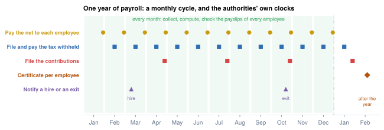
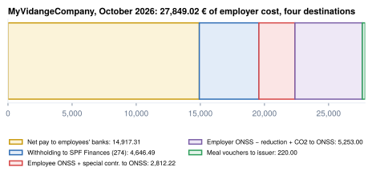

What payroll is, and why it is hard
Several parties, one monthly cycle, and rules that change during the year
- Name the parties of any payroll and the money that flows between them
- Walk through the six steps of the payroll cycle and the event, monthly, quarterly and yearly rhythm of the authorities
- Explain why a payroll error is costly, and who finds it
- Place the cycle in the Odoo models before you meet them in Part III
Early in November, MyVidangeCompany transfers 2,614.26 € to Mélanie for October. Her contract says 4,000.00 €, and the company spends 5,004.80 € on her. Nothing is lost: 1,385.74 € is owed to the social security office and the tax administration, and 1,004.80 € is the employer's own contribution. Payroll is getting every split right, on time, for every employee, in a way an inspector can reproduce.1
What payroll is
Payroll is the work an employer does every pay period to pay its employees: compute each one's pay from the contract and the time worked, pay the net to the employee, and pass the amounts it kept back on to the authorities, with the reports that prove them. The word also names the list of employees and amounts for one period (the October payroll). Other names: payroll processing, salary administration, pay run.
Three things follow from that definition:
- It never stops. The same computation runs every period for every employee, with new inputs each time: a hire, a sick day, a rate that changes in July.
- Much of the money is not the employee's to keep. Part of the salary goes to social security and to the tax office; the employer collects it and is liable for it (next section, and Chapter 2).
- Someone checks it. The authorities receive the money and the reports on their own calendar, and can recompute any payslip.

The parties and the money
In every country, payroll moves money from one payer to several receivers. The names change; the shape does not.
- computes every payslip
- keeps back tax and contributions
- pays everyone
- declares it all, and is liable if it is wrong
Key idea
The employer is an unpaid collection agent for the state: it deducts, pays and reports for the employee, and is liable if it does not. In many countries, Belgium included, a contribution the employer forgot to deduct cannot be claimed back from the worker later.3
Case study: MyVidangeCompany, one month
MyVidangeCompany pays five people. In Belgium the social security office is the ONSS (one office collects every contribution) and the tax administration is SPF Finances. Marie gets meal vouchers, so a voucher issuer is paid too.

Worked example: MyVidangeCompany, October 2026
The five regular payslips:1
| Destination | Amount (€) | Share of cost |
|---|---|---|
| NET Employees' bank accounts | 14,917.31 | 53.56 % |
| ONSS social security: employee and employer contributions | 8,065.22 | 28.96 % |
| P.P Tax administration: withholding tax | 4,646.49 | 16.68 % |
| MEAL Meal-voucher issuer | 220.00 | 0.79 % |
| Total = employer cost | 27,849.02 | 100.00 % |
Gross salaries are 22,400.00 €; the employer adds its own contributions and voucher share.
In Odoo. Part I uses an independent calculator that follows the law; later parts use the payslips Odoo computed on the demo database. Odoo's October pay run shows 28,192.34 € of employer cost, a little more, because it includes Emma's pro-rata sector bonus (Chapter 6) and some small employer funds (Chapter 3).2 Chapter 10 explains how to read such differences.
Around the world
The same diagram, with different boxes filled in:
- United States: federal taxes, plus a second layer per state and sometimes per city.
- Switzerland: many separate insurers (old age, unemployment, accident, pension…) and a cantonal source tax.
- United Arab Emirates: no income tax; a pension fund for nationals only; salaries paid through the monitored Wage Protection System.
- Hong Kong: no withholding; the employer reports salaries and each employee pays his own tax.
- Australia: no employee contribution; the employer pays superannuation into each employee's chosen fund.
The payroll cycle
Every pay period, the same six steps, in a loop: the next period starts as soon as the last one is booked.
Software automates step 2; teams spend their time on steps 1, 3 and 5.
In Odoo. The cycle is the life of a payslip: hr.payslip goes draft → validated → paid (or cancel). A pay run (hr.payslip.run) groups the payslips of one structure and one period. Chapter 15 runs it by hand.
The rhythm: event, month, quarter, year
The four clocks of the opening figure, with MyVidangeCompany's dates:
| Rhythm | Typical obligation | MyVidangeCompany (Belgium) |
|---|---|---|
| Event | notify a hire before work starts, and an exit | "Dimona" hire and exit notice to the social security office6 |
| Every pay period | pay the net by a legal date | by the 4th working day after the month5 |
| Monthly or quarterly | file and pay the tax withheld; file and pay contributions | monthly withholding return; quarterly social security return4,7 |
| Yearly | give each employee and the tax authority an annual certificate | annual tax slip per employee, by 28 February8 |
Chapter 7 puts MyVidangeCompany's filings on one calendar.
Why payroll is hard
mindmap
root((Payroll is hard))
Law changes
new tax formula on 1 Jan
and sometimes mid-year
thresholds indexed
Many parties
tax office, funds, bank
different formats and deadlines
Exact money
rounding at every step
returns must match payslips
Time
proration of joiners
sickness, overtime, holidays
Exceptions
leavers and indemnities
corrections after paymentThree properties make payroll unforgiving, in every country.
- It is law, not preference. A forgotten hire notice is a criminal offence in Belgium.6
- It cannot be undone once paid. You correct on a later payslip (Chapter 6).
- It is checked from outside. The authorities cross-check returns, payments, yearly certificates and the employee's own tax return.
Rules that move during the year
A payroll rule is a value with a start date. Most countries change rates and tax tables on 1 January; many also change something mid-year. Belgium changed its withholding formula on 1 January and again on 1 November 2026.9
With the same gross, the November change lowers Mélanie's, Jurgen's and Yannick's withholding by 8.47 € a month but raises Marie's by 28.86 €: the new formula gives less relief to a married couple with one income.1 Chapter 4 explains why; Chapter 11 shows how Odoo stores both formulas.
Worked example: what a forgotten update costs
Keep the January formula in November: Mélanie, Jurgen and Yannick are over-withheld 8.47 € a month and get it back a year later; Marie is under-withheld 28.86 € a month and pays at her assessment. Neither error shows on the day, and every monthly return is wrong until the fix.
Common pitfall
Treating payroll as "salary minus a few percentages". The percentages come with caps, low-wage reductions, family relief, special bonus rates and effective dates. Each is a bug waiting in a naive implementation; the next seven chapters take them one at a time.
In practice
Odoo customers often still use an accountant or payroll bureau for some filings. When you scope a project, ask early: who files the social security return, who files the tax return, who pays the net?
Summary
- The parties are always the same kinds: employer, employee, social security, tax authority, third parties, bank. Countries differ in how many funds and layers there are.
- The employer is a collection agent, liable for what it fails to deduct.
- MyVidangeCompany spends 27,849.02 € in October 2026 for 22,400.00 € of gross; 14,917.31 € is net pay.
- Six steps a period: collect, compute, validate, pay, declare, account. The authorities add event, monthly/quarterly and yearly deadlines.
- Rules change during the year, sometimes mid-year, so every rule needs an effective date.
- In Odoo the cycle is the life of hr.payslip (
draft,validated,paid), batched in hr.payslip.run.
-
All cast numbers in Part I come from the independent calculator (
scripts/be_calc.py, written toresearch/numbers_be_calc.md), built from the official sources cited in each chapter. ↩↩↩ -
Payslips computed by Odoo master on the demo database,
research/numbers_be.md, section 6 (October 2026 monthly pay run); differences listed inresearch/odoo_vs_calc.md. ↩ -
ONSS, administrative instructions 2026/3, general rule on the payment of contributions: https://www.socialsecurity.be/employer/instructions/dmfa/fr/latest/instructions/obligations/obligations_nsso/contributionpayment_obligations_periodicity/generalrule.html. ↩
-
SPF Finances, withholding tax calendar 2026 (including the dates for social secretariats): https://finances.belgium.be/fr/entreprises/personnel_et_remuneration/precompte_professionnel/calendrier. ↩
-
SPF Emploi, time and date of payment of the salary: https://emploi.belgique.be/fr/themes/remuneration/protection-de-la-remuneration/epoque-et-date-de-paiement. ↩
-
ONSS, Dimona, general and declarations: https://www.socialsecurity.be/employer/instructions/dmfa/fr/latest/instructions/obligations/obligations_nsso/dimona/general.html and https://www.socialsecurity.be/employer/instructions/dmfa/fr/latest/instructions/obligations/obligations_nsso/dimona/declarations_modifications_cancellations.html. ↩↩
-
ONSS, DmfA general: https://www.socialsecurity.be/employer/instructions/dmfa/fr/latest/instructions/obligations/obligations_nsso/dmfa/general.html. ↩
-
SPF Finances, Belcotax-on-web deadlines: https://finances.belgium.be/fr/E-services/Belcotaxonweb/delais-de-rentree-des-fiches. ↩
-
Withholding: Annex III AR/CIR 92, version history: https://www.minfin.fgov.be/myminfin-web/pages/public/fisconet/document/439228c6-67bb-4e75-a9e1-4cabe4dc62ec. Work bonus: ONSS instructions 2026/1, 2026/2 and latest: https://www.socialsecurity.be/employer/instructions/dmfa/fr/latest/instructions/deductions/workers_reductions/workbonus.html. ↩